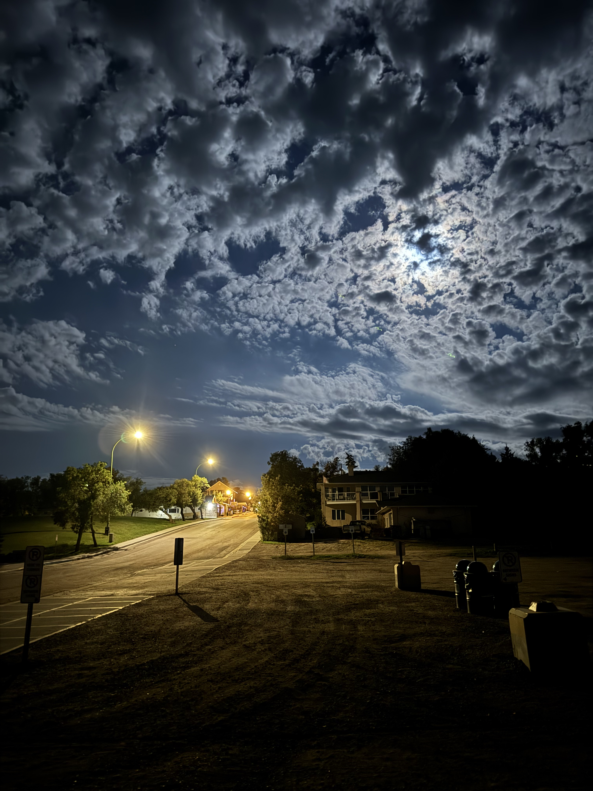
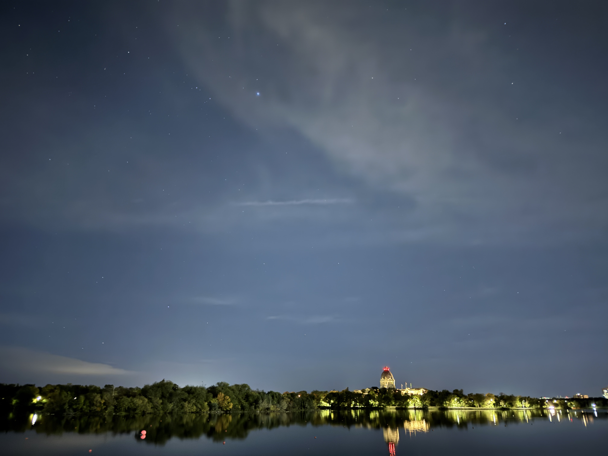
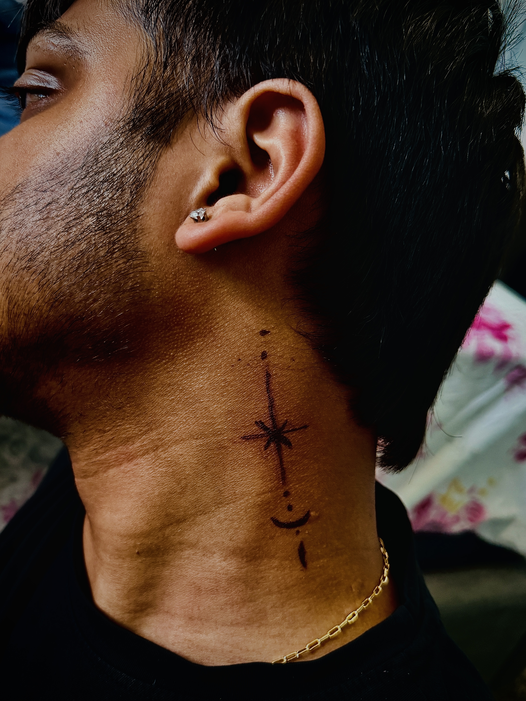
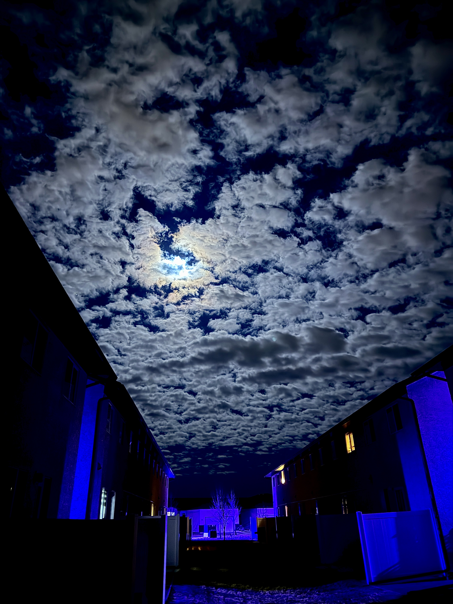

Photography
Night streets, city views, skies, landscapes, details, and cinematic moments.

OS Visuals Studio
Cinematic photography, moody streets, dramatic skies, and visual storytelling built with old-film soul and modern Gen Z energy.
About
OS Visuals Studio is built around one idea: every city has a hidden cinematic side. Through light, shadows, reflections, silence, and movement, I turn ordinary moments into visuals that feel like scenes from a film.
The style blends classic editorial photography with today’s digital culture: clean, dark, emotional, bold, and made for modern screens.
Creative Direction
Night streets, city views, skies, landscapes, details, and cinematic moments.
Moody edits, contrast control, cinematic tones, and social-media ready visuals.
Creative visuals for personal brands, artists, small businesses, and collaborations.
Selected Work

01

02

03

04
Contact
For collaborations, brand visuals, portfolio projects, or creative work.